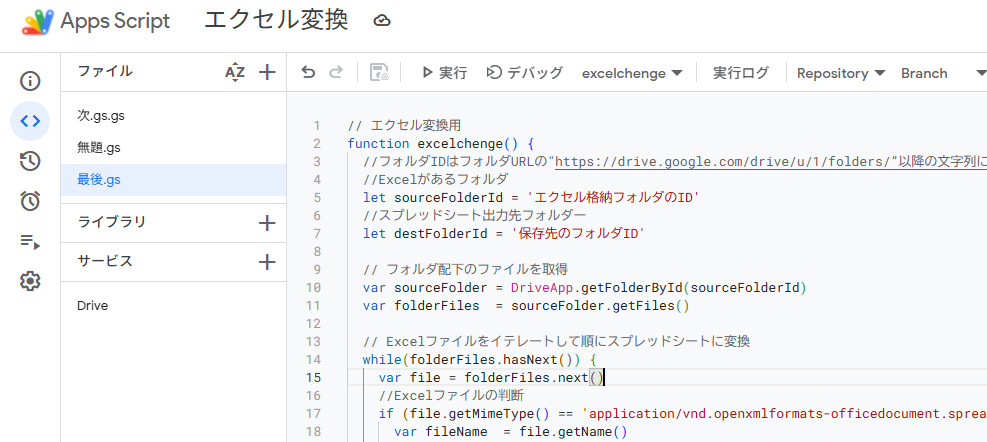

エクセルのファイルからGoogleスプレッドシートに変換する
エクセルファイルとCSVファイルでは少しやり方が違うので気を付けてください。
１:GoogleDriveにフォルダを作る
変換したいエクセルのフォルダ、変換後のフォルダ、変換したいCSVのフォルダ、変換後のフォルダの計４つ作る。その中にエクセルとCSVのファイルを入れておいてください
２:GoogleDriveにGoogleAppsScriptのシートを作成する
GoogleDriveの右上の新規のところを押してその他からGoogleAppsScriptを選択する。
※飛んだ先で共同編集者がなんたらと書かれてあるときがありますが、とりあえずスクリプトを作成というのを押してください。
３:サービスを増やす
サービスの右側の＋ボタンを選択し、サービスを追加でいろいろあるAPIの中からDriveAPIを選び追加を押しましょう。
４:コードの記入
下記のコードを画像のようにコピー＆ペーストしてください。コメントにも書いているようにフォルダIDをコード内に記入を忘れずにしてください。

// エクセル変換用
function excelchenge() {
//フォルダIDはフォルダURLの"https://drive.google.com/drive/u/1/folders/”以降の文字列になります。
//Excelがあるフォルダ
let sourceFolderId = 'エクセル格納フォルダのID'
//スプレッドシート出力先フォルダー
let destFolderId = '保存先のフォルダID'
// フォルダ配下のファイルを取得
var sourceFolder = DriveApp.getFolderById(sourceFolderId)
var folderFiles = sourceFolder.getFiles()
// Excelファイルをイテレートして順にスプレッドシートに変換
while(folderFiles.hasNext()) {
var file = folderFiles.next()
//Excelファイルの判断
if (file.getMimeType() == 'application/vnd.openxmlformats-officedocument.spreadsheetml.sheet') {
var fileName = file.getName()
Logger.log(fileName)
Logger.log(file.getMimeType())
var option = {
mimeType:MimeType.GOOGLE_SHEETS, //Google sheets
parents:[destFolderId], //出力先フォルダーを指定
name:fileName //出力先ファイル名
}
Drive.Files.create(option,file)
}
Logger.log("変換完了");
}
}
//CSV変換用
function csvchenge() {
//フォルダIDはフォルダURLの"https://drive.google.com/drive/u/1/folders/”以降の文字列になります。
//CSVがあるフォルダ
let sourceFolderId = 'CSV格納フォルダのID'
//スプレッドシート出力先フォルダー
let destFolderId = '保存先のID'
// フォルダ配下のファイルを取得
var sourceFolder = DriveApp.getFolderById(sourceFolderId)
var folderFiles = sourceFolder.getFiles()
// Excelファイルをイテレートして順にスプレッドシートに変換
while(folderFiles.hasNext()) {
var file = folderFiles.next()
//Excelファイルの判断
var fileName = file.getName()
Logger.log(fileName)
Logger.log(file.getMimeType())
var option = {
mimeType:MimeType.GOOGLE_SHEETS, //Google sheets
parents:[destFolderId], //出力先フォルダーを指定
name:fileName //出力先ファイル名
}
Drive.Files.create(option,file)
Logger.log("変換完了");
}
}
５:実行
画面上部のデバッグの隣のところからエクセル変換のときはexcelchenge、CSVのときはcvschengeの関数を選択して下さい。そのあと、実行ボタンを押してください。 もしかしたらここで、何かメッセージが出るかもしれませんが、無視してください。
６:ごみ捨て
格納していたフォルダはもういらないのでゴミ箱へ
注意！
実行する際やGoogleAppsScriptsを起動するときにセキュリティがかかった時には諦めましょう。